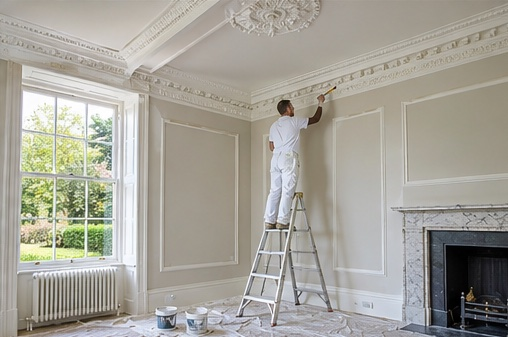

Construction services
Painting & decorating
Specify a finish that suits the space

Project scope
Specify a finish that suits the space
Whether refreshing one room or redecorating a shared building, the condition of the surfaces and the demands of daily use guide preparation and finish selection.
- Wall and ceiling preparation
- Interior woodwork and trim
- Exterior paintwork and rental refreshes
What affects a decorating quote?
Preparation, access, drying time and finish specification all matter. Photos of defects are particularly helpful when discussing the initial scope.